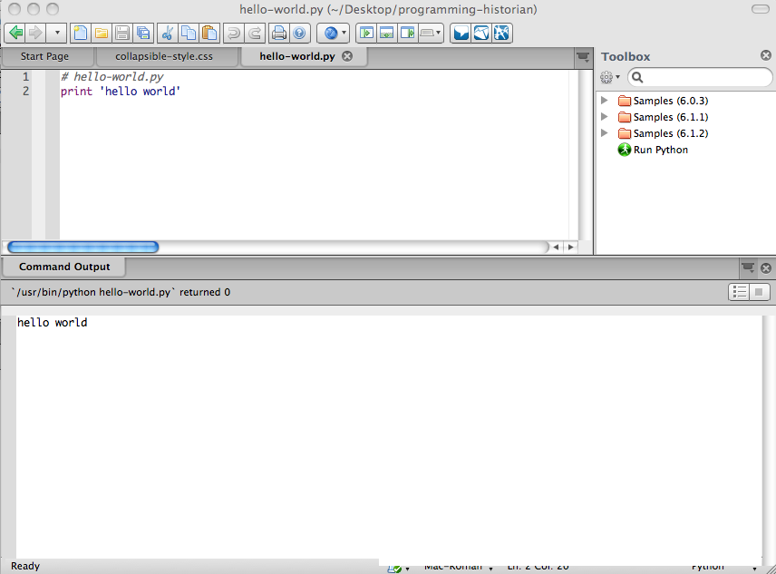

July 17, 2012
Setting up an Integrated Development Environment for Python (Linux)
- Reviewed by
Miriam Posner
, Jim Clifford
and Amanda Morton
Thanks to John Fink for providing the basis of this section. These instructions are for Ubuntu 12.04 LTS, but should work for any apt based system such as Debian, or Linux Mint, provided you have sudo installed.
Back up your computer
It is always important to make sure you have regular and recent backups of your computer. This is just good advice for life, and is not limited to times when you are engaged in programming.
Install Python v. 2 and Python “Beautiful Soup” module
- Open a terminal (
Dash Home, then typeTerminal, then click on the Terminal icon). - Now type:
sudo apt-get install python2.7 python-beautifulsoup - Enter your password, and then type
Yto finish the install. Note that you probably have Python 2.7 installed already, so don’t be alarmed if Ubuntu tells you that.
Create a directory
You will keep your Python programs in this directory. It can be anywhere you like, but it is probably best to put it in your home folder. Something like this in your open terminal window should do the trick:
cd ~
mkdir programming-historian
Install Komodo Edit
Komodo Edit is a free and open source code editor, but as we said in the
introduction, you have many other text editing options. You can
download Komodo Edit at the Komoto Edit Website. Once you’ve
downloaded it, open it with Ubuntu’s package manager, extract it to your
home directory, and follow the installation instructions. If you are
following along with these instructions and have installed Komodo Edit,
open the home folder, go to the Komodo-Edit-7/bin directory, and click
on komodo. You can also right click on the Komodo icon in your launcher
and click “Lock to Launcher” to have Komodo saved permanently to your
launcher bar.
Make a “Run Python” Command in Komodo Edit
- In Komodo Edit, click the gear icon under
Toolboxand selectNew Command. - In the top field type “
Run Python File“ - In the Command field, type:
%(python) %FThen hit the OK button at the bottom of the Add Command window.
Step 2 – “Hello World” in Python
It is traditional to begin programming in a new language by trying to create a program that says “hello world” and terminates. We will show you how to do this in Python and HTML.
Python is a good programming language for beginners because it is very high-level. It is possible, in other words, to write short programs that accomplish a lot. The shorter the program, the more likely it is for the whole thing to fit on one screen, and the easier it is to keep track of all of it in your mind.
The languages that we will be using are all interpreted. This means that there is a special computer program (known as an interpreter) that knows how to follow instructions written in that language. One way to use the interpreter is to store all of your instructions in a file, and then run the interpreter on the file. A file that contains programming language instructions is known as a program. The interpreter will execute each of the instructions that you gave it in your program and then stop. Let’s try this.
In your text editor, create a new file, enter the following two-line
program and save it to your programming-historian directory as
hello-world.py
# hello-world.py
print 'hello world'
Your chosen text editor should have a “Run” button that will allow you
to execute your program. If all went well, it should look something like
this (Example as seen in Komodo Edit. Click on the image to see a
full-size copy):

“Hello World” in Python
Interacting with a Python shell
Another way to interact with an interpreter is to use what is known as a shell. You can type in a statement and press the Enter key, and the shell will respond to your command. Using a shell is a great way to test statements to make sure that they do what you think they should.
You can run a Python shell by launching the “terminal”. For Linux, go to
Applications-> Accessories -> Terminaland do the same. At the Python
shell prompt, type
python
This will open up the Python prompt, meaning that you can now use Python commands in the shell. Now type
print 'hello world'
and press Enter. The computer will respond with
hello world
When we want to represent an interaction with the shell, we will use
-> to indicate the shell’s response to your command, as shown below:
print 'hello world'
-> hello world
On your screen, it will look more like this:

Python Shell in Mac Terminal
Now that you and your computer are up and running, we can move onto some more interesting tasks. If you are working through the Python lessons in order, we suggest you next try ‘Viewing HTML Files‘
Suggested Citation
William J. Turkel and Adam Crymble , "Setting up an Integrated Development Environment for Python (Linux)," Programming Historian (17 July 2012), http://programminghistorian.org/lessons/linux-installation